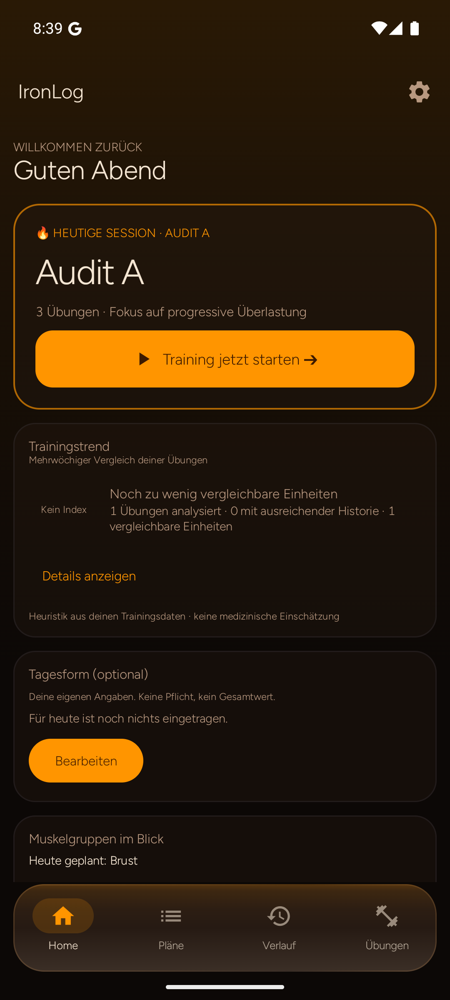

IRONLOG / UX-AUDIT · ERGEBNIS
Das gespeicherte Training sofort sehen
Die Zusammenfassung bestätigt Speicherung, Dauer, Sätze und Volumen, bevor der Verlauf geöffnet werden muss.
06 / 07
Vorher · Original
Android / Verlauf
Nach dem Beenden erscheint Home; die korrekt gespeicherten Werte müssen im Verlauf gesucht werden.
Nachher · Entwurf
Gespeicherte Zusammenfassung09:41▮▮▮ 86%
Dienstag · Push
Training gespeichert
Vorzeitig beendet
2 bestätigte Sätze · 7 offen. Die offenen Sätze wurden nicht ergänzt.
05:00
2
1.140 kg
Bankdrücken
Keine Rekorde behauptet. Planänderungen sind optional und separat.
01 / BESTÄTIGUNG
Gespeichert heißt sichtbar
„Training gespeichert“ steht direkt nach dem Abschluss. Dauer, Sätze und Volumen sind im selben Blick prüfbar.
02 / RECHNUNG
1.140 kg aus echten Sätzen
60 × 10 + 60 × 9 = 1.140 kg. Keine erfundenen Rekorde und keine Hochrechnung offener Sätze.
03 / NÄCHSTER SCHRITT
Details und Plan getrennt
Übungsdetails sind direkt erreichbar. Eine optionale Planprüfung ist sichtbar, aber nicht automatisch ausgelöst.
Abnahmeziel
Ergebnis stimmt nach Neustart mit Verlauf und Satzdetails überein.